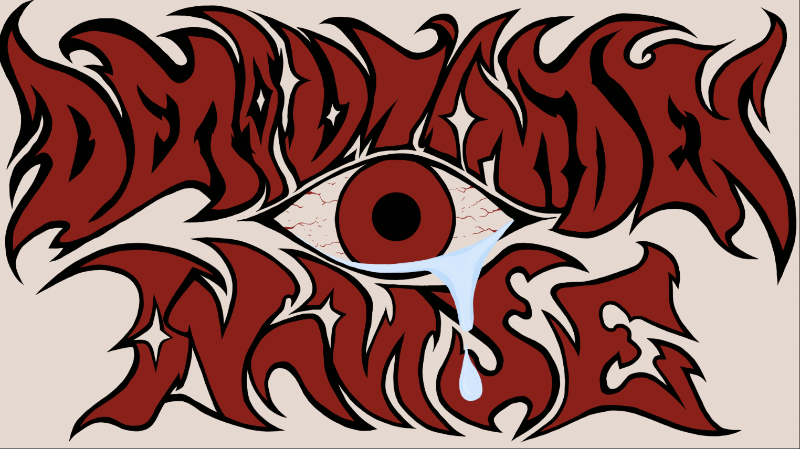

Musikvideo
Et projekt med musikvideo.
Links
- Website: [Link til projektets website]
- Figma: [Link til dit Figma-design]
- GitHub: [Link til projektets kode]

Tools
Skriv de værktøjer og teknologier, du har brugt i projektet.
Opgaven
Beskriv opgaven her: Hvad gik projektet ud på, hvilket problem skulle løses, og hvilke krav skulle løsningen opfylde?
Videoproduktion · 2. semester · Individuelt projekt / gruppeprojekt
Focuspoints
Beskriv dine fokuspunkter her, fx idéudvikling, visuel identitet, UI/UX, kodning og brugertest. Fortæl, hvad du arbejdede med, og hvad du lærte undervejs.
Målgruppen
Beskriv målgruppen her: Hvem er brugerne, hvilke behov har de, og hvordan har du tilpasset løsningen til dem?